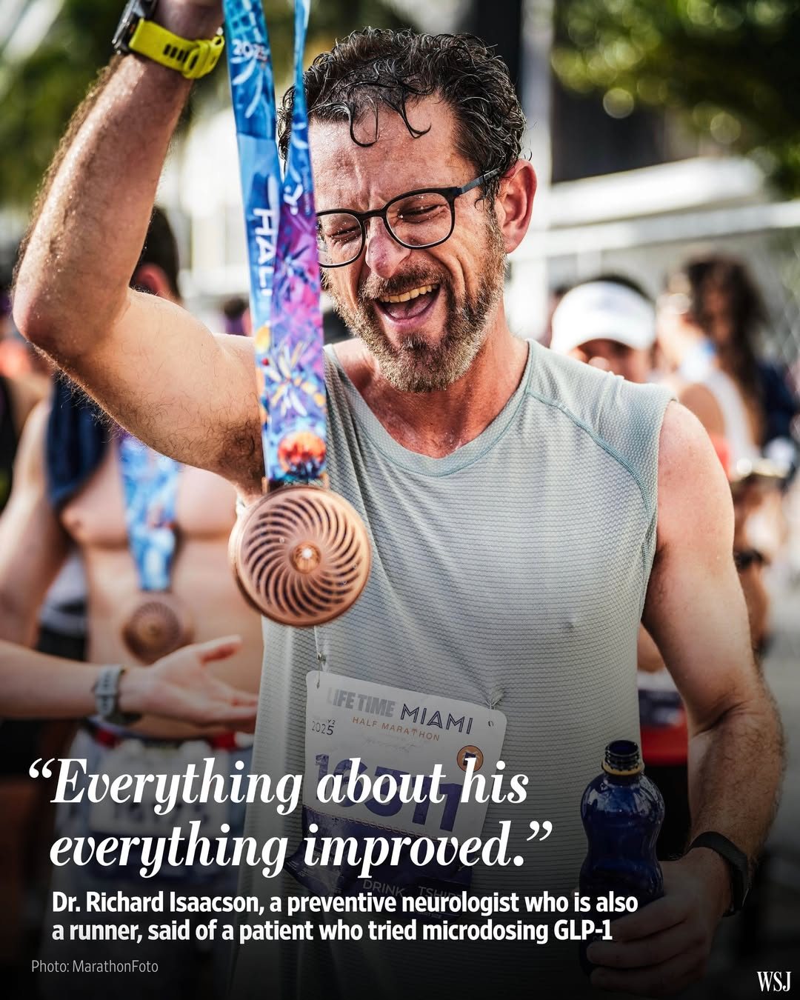

See comments for a link that bypasses the paywall.
A burgeoning community of runners, cyclists and other sports and exercise enthusiasts are taking the weight-loss drugs in the hopes of gaining a performance edge.
Dr. Richard Isaacson, a preventive neurologist, says he has recommended microdosing for some patients. One is a former Olympic gold medalist.
“We tried to see what was the minimal dose that he could tolerate without losing any more weight,” says Isaacson of the former Olympian. Over months, the athlete gained muscle, improved his VO2 max, a measure of aerobic capacity, and lowered his risk for neurodegenerative disease. “Everything about his everything improved.”
Isaacson says he has experimented with various doses of a GLP-1 himself. He arrived at a “sweet spot” with no negative side effects. His cholesterol, muscle mass and VO2 max improved. He stopped craving Girl Scout cookies. And this January, he ran his best half-marathon in 15 years.
The question, he says, remains: “Is that performance-enhancing, or is it health optimization? I think that’s a gray area.”
Some health experts also have concerns: The drugs come with side effects that pose potential risks.
Read more:
wsj.comOzempic amateur athleteson.wsj.com